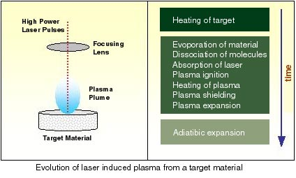
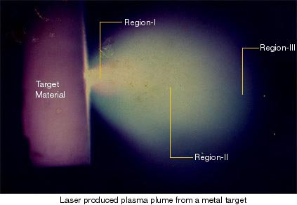

When a powerful laser pulse is focused on a surface, a tiny amount of the material is vaporised and through further photon absorption it is heated up until it ionise and expand from the sample surface as a plasma cloud. This laser-induced plasma is a micro-source of light that can be analysed spectrally and temporally resolved detection of the characteristic emissions by a spectrometer. This is the principle of the laser induced plasma spectroscopy (LIPS).

The nature and characteristic of the laser induced plasma from a solid target depend on various parameters like the chemical composition of the target, wavelength of the radiation, energy deposited on the target, pressure of the residual gas in the plasma chamber, etc. The composition of the plasma will in general depend on its distance from the sample surface as a result of the rapid expansion of the plasma from the target followed by the lowering of the plasma temperature. The population of the various types of atomic, molecular, ionic and neutral species in the plasma will also depend on the spatial separation of the point of observation from the target.

Based on physical composition, laser induced plasma can be devided into three regions. Please see the image above.
* Region-I: This is the central or core region. This is the plasma emission close to the sample surface, where the temperature is maximum and most species are in inonised state.
* Region-II: This is the mid region. Here apart from ionised species, both neutral and certain number of molecular species are present.
* Region-III: It is the extended region of the plasma. Here plasma temperature is comparatively lower and larger density of molecular species present.
Laser induced plasma spectroscopy is an effective tool to detect various transient species present in the above regions of the laser produced plasma. The complex interaction process occurring in the plasma can be analysed using time resolved studies of the spectral emission of the plasma.